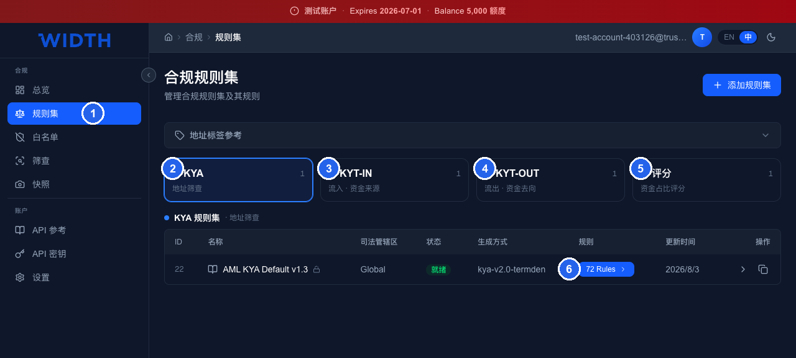
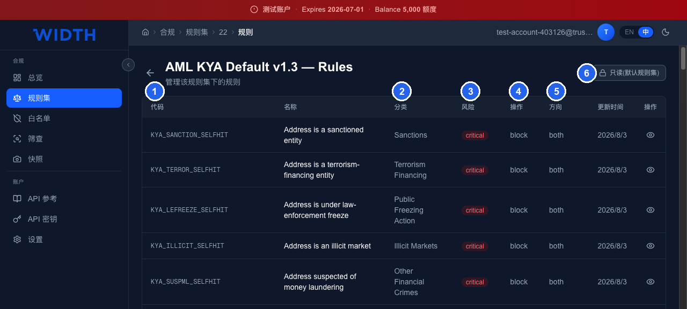
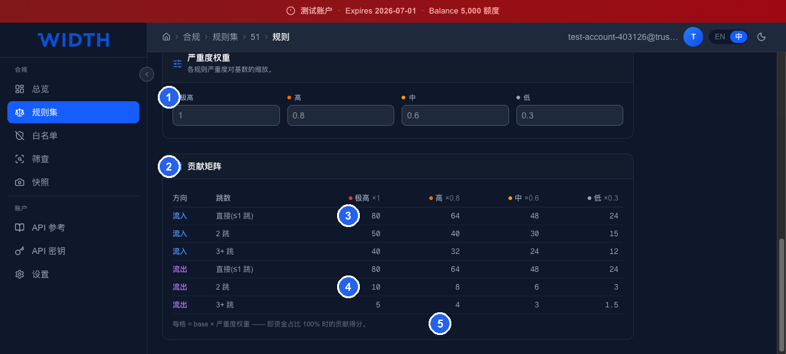
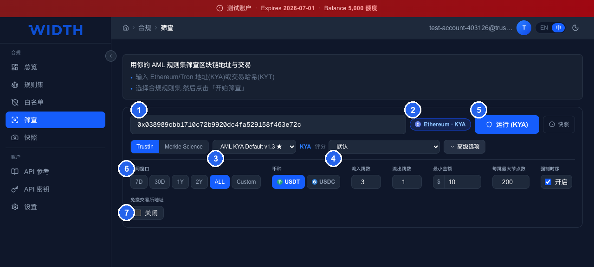
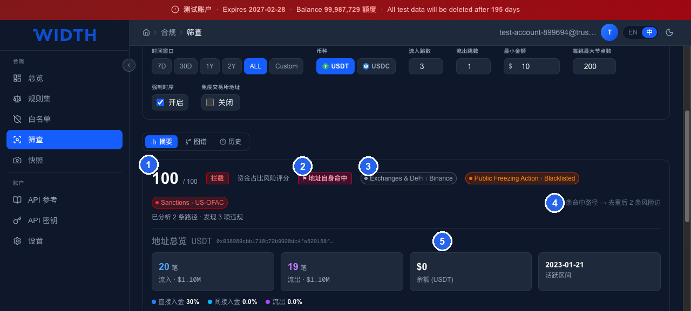
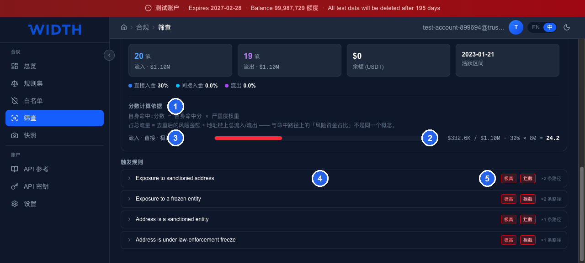

PRODUCT MANUAL · v1.3
产品使用手册 · v1.3
DART Product Manual
DART 产品使用手册
Two rulesets, one screening: the path-matching ruleset decides “what counts as a violation”, the scoring ruleset decides “how severe it is and what to do”. This manual explains both rulesets end to end — how they are built, how they are calculated, and how to use them in the console and the API.
两套彼此独立的规则集完成一次合规筛查：路径匹配规则集判定「什么算违规」，打分映射规则集判定「有多严重、该怎么处置」。本手册说明这两套规则集的构成与算法，以及在控制台和 API 上的完整使用方式。
Screenshots are from the AML console v2 — the DART console ships the same screens.截图来自 AML 控制台 v2 —— DART 控制台为相同界面。
01How a screening runs筛查是怎么跑的
The big picture first: the steps a screening goes through, and where each ruleset plugs in.
先建立整体印象：一次筛查经过哪几步，两套规则集分别插在哪里。
You submit an address (KYA) or a transaction (KYT). The system runs a path investigation against the on-chain data layer, tracing the address's funds upstream and downstream for several hops to produce a fund-flow graph. Then the two rulesets take over in sequence: the path-matching ruleset finds every violation on this graph, and the scoring ruleset converts those hits into a 0–100 score and a disposition.
你提交一个地址（KYA）或一笔交易（KYT）。系统先向链上数据层发起一次路径调查，把这个地址的资金往上游、下游各追若干跳，得到一张资金流图。随后两套规则集依次介入：路径匹配规则集在这张图上找出所有违规命中，打分映射规则集把这些命中折算成一个 0–100 的分数和一个处置判定。
Input Step 1 Ruleset A Ruleset B Output
Address / TX hash → Path investigation → Path matching → Scoring mapping → Score + verdict
Ethereum / Tron Expand hop-by-hop Match each path Direction × hops Pass / Review /
USDT / USDC fund-flow graph + against rules, × severity × EDD / Block
counterparty labels produce hit list share of funds
输入 第一步 规则集 A 规则集 B 输出
地址 / 交易哈希 → 路径调查 → 路径匹配 → 打分映射 → 分数 + 判定
Ethereum/Tron 按跳数展开 逐条路径匹配 按方向、跳数、 通过 / 复核 /
USDT/USDC 资金流图 + 规则,产出 严重度、资金占比 加强尽调 / 拦截
对手方标签 命中列表 折算成分数
KEY DIFFERENCE — The path-matching ruleset only answers yes / no — does this path violate a rule? It never produces a score. The score comes entirely from the scoring ruleset. So the same hit list produces different scores and dispositions under a different scoring ruleset — while the hit list itself never changes.关键区别 —— 路径匹配规则集只回答是/否——这条路径有没有违规。它不产生分数。分数完全由打分映射规则集决定。所以同一批命中，换一套打分规则集就会得到不同的分数和判定，而命中列表本身不变。
02The two rulesets at a glance两套规则集的分工
On the “Rulesets” page, four cards correspond to the two kinds of rulesets.
在「规则集」页面，四张卡片对应两类规则集。

Compliance rulesets page: left — the Rulesets entry; KYA / KYT-IN / KYT-OUT — path-matching rulesets; Scoring — the scoring ruleset; the rule count opens the full rule list.
合规规则集页面：左侧「规则集」入口；KYA / KYT-IN / KYT-OUT —— 路径匹配类；评分 —— 打分映射类；规则条数，点进去查看该规则集下的全部规则。
- Left — the “Rulesets” entry
- 左侧「规则集」入口
- KYA — address screening, path-matching type
- KYA —— 地址筛查，路径匹配类
- KYT-IN — transaction inflow side (source of funds), path-matching type
- KYT-IN —— 交易流入侧（资金来源），路径匹配类
- KYT-OUT — transaction outflow side (destination of funds), path-matching type
- KYT-OUT —— 交易流出侧（资金去向），路径匹配类
- Scoring — fund-attribution scoring, scoring-mapping type
- 评分 —— 资金占比评分，打分映射类
- Rule count — click through to see all rules under that ruleset
- 规则条数，点进去查看该规则集下的全部规则
The first three cards are the same kind of thing (path-matching); the fourth is a different kind (scoring-mapping).
前三张卡片是同一类东西（路径匹配），第四张是另一类（打分映射）。
| Path-matching ruleset路径匹配规则集 | Scoring ruleset打分映射规则集 | |
|---|---|---|
| Type类型标识 | kya / kyt_in / kyt_out | scoring |
| Question it answers回答的问题 | Does this path violate a rule? Which one?这条路径违规吗？违反哪条？ | How severe is it overall? What should we do?整体有多严重？该怎么处置？ |
| Input输入 | Fund-flow graph + label of every node资金流图 + 每个节点的标签 | Hit list from the previous step + address total on-chain flow上一步产出的命中列表 + 地址链上总流量 |
| Output输出 | Hit list — rule, severity, hop, amount命中列表（规则、严重度、跳数、金额） | 0–100 score + disposition tier0–100 分数 + 判定档位 |
| Contents内容形态 | 72 rules, each with a condition expression72 条规则，每条含条件表达式 | A contribution matrix + weights + tier thresholds一张贡献矩阵 + 权重 + 档位阈值 |
| Built-in version内置版本 | AML KYA / KYT-IN / KYT-OUT Default v1.3AML KYA / KYT-IN / KYT-OUT Default v1.3 | AML Fund-Attribution Scoring Default v1.0AML Fund-Attribution Scoring Default v1.0 |
| Used per screening每次筛查用几套 | 1 (auto-matched by KYA / KYT and direction)1 套（按 KYA/KYT 及方向自动匹配） | 11 套 |
| Customizable可否自定义 | Copy a built-in ruleset, then edit可复制内置规则集后修改 | Copy, then adjust matrix and thresholds可复制后调整矩阵与阈值 |
03Path-matching rulesets路径匹配规则集
How the 72 rules are organized, and what a single rule is made of.
72 条规则如何组织，以及一条规则由什么构成。

Rule list: code (unique id, echoed verbatim in results) · category (risk class) · risk (severity, converted to a weight when scoring) · action (suggested disposition) · direction (inflow / outflow / both).
规则列表：代码（唯一标识，命中后原样出现在结果里）· 分类（风险类别）· 风险（严重度，打分时换算成权重）· 操作（建议处置动作）· 方向（对流入侧、流出侧还是双向生效）。
- Code — unique rule id, echoed verbatim in results
- 代码 —— 规则唯一标识，命中后原样出现在结果里
- Category — risk class that decides which scenario it belongs to
- 分类 —— 风险类别，决定它属于哪个场景
- Risk — severity, converted to a weight when scoring
- 风险 —— 严重度，打分时换算成权重
- Action — suggested disposition
- 操作 —— 建议处置动作
- Direction — applies to inflow, outflow or both
- 方向 —— 对流入侧、流出侧还是双向生效
- Built-in rulesets are read-only — copy one before editing
- 内置规则集为只读，如需修改请先复制一份
The five rules in the screenshot are all “self-hit” rules: the address itself carries sanctions, terrorism-financing, law-enforcement-freeze and similar labels.
图中五条都是「自身命中」型规则：地址自己带了制裁、恐怖融资、执法冻结等标签。
What a rule is made of
一条规则由什么构成
Each rule is a set of conditions plus a scope. Real built-in rules (from production) look like this:
每条规则是一组条件，加上生效范围。真实的内置规则（取自生产库）长这样：
// 自身命中:地址自己就是制裁实体。跳数 0,max_hops = -1 表示「只看地址本身」 // Self-hit: the address itself is a sanctions entity. 0 hops, max_hops = -1 = "the address only" KYA_SANCTION_SELFHIT critical / block / 0..-1 [{ "parameter": "primary_category", "operator": "==", "value": "Sanctions" }] // 直接暴露:一跳之内的对手方是制裁实体,且金额 > 10 USD // Direct exposure: a counterparty within 1 hop is a sanctions entity, amount > 10 USD KYA_SANCTION_EXPOSURE critical / block / 1..1 [{ "parameter": "primary_category", "operator": "==", "value": "Sanctions" }, { "parameter": "amount", "operator": ">", "value": 10, "unit": "USD" }] // 分层暴露:2 跳,且该路径的风险资金占比 >= 5% // Layered exposure: 2 hops, and the path's risk funds share >= 5% KYA_SANCTION_EXPOSURE_H2 critical / block / 2..2 [{ "parameter": "primary_category", "operator": "==", "value": "Sanctions" }, { "parameter": "amount", "operator": ">", "value": 10, "unit": "USD" }, { "parameter": "risk_rate", "operator": ">=", "value": 5 }]
The three rule shapes
三种规则形态
The 72 rules are combinations of three shapes. Understand these three and you understand the whole ruleset:
72 条规则由三种形态组合而成，理解这三种就理解了整套规则集：
| Shape形态 | Code suffix代码后缀 | Hops跳数范围 | Meaning含义 |
|---|---|---|---|
| Self-hit自身命中 | _SELFHIT | 0 .. -1 | The screened address / transaction itself carries the risk label. Strongest signal — triggers the top score directly.被筛地址/交易本身带有该风险标签。最强信号，直接触发最高分。 |
| Direct exposure直接暴露 | _EXPOSURE | 1 .. 1 | A direct counterparty within 1 hop carries the label, and the amount clears the threshold.一跳之内的直接交易对手带有该标签，且金额超过门槛。 |
| Layered exposure分层暴露 | _EXPOSURE_H2 … _H5 | 2..2 … 5..5 | Indirect linkage 2–5 hops away. The further the hop, the higher the required risk-funds share (≥5% / 10% / 15% / 20%) — distant weak links stay quiet.2–5 跳的间接关联。跳得越远，要求的风险资金占比门槛越高（≥5% / 10% / 15% / 20%），避免远距离弱关联造成误报。 |
Risk categories and rule counts
风险类别与规则条数
The 72 built-in KYA rules span 9 categories:
内置 KYA 规则集的 72 条规则分布在 9 个类别：
| Risk category风险类别 | Rules规则数 | Typical severity典型严重度 |
|---|---|---|
| High-Risk Entities 高风险实体 | 16 | high |
| Cybercrime 网络犯罪 | 12 | high |
| Obfuscation 混淆服务 | 8 | high |
| Sanctions 制裁 | 6 | critical |
| Terrorism Financing 恐怖融资 | 6 | critical |
| Public Freezing Action 执法冻结 | 6 | critical |
| Illicit Markets 非法市场 | 6 | critical |
| Other Financial Crimes 其他金融犯罪 | 6 | critical |
| Gambling 博彩 | 6 | medium |
KYA vs KYT
KYA 与 KYT 的关系
The three path-matching rulesets are structurally identical — all 72 rules — differing only in what they screen:
三套路径匹配规则集内容同构，都是 72 条，区别只在适用对象：
- KYA — screens one address. Traces both its inflow and outflow sides.
- KYA —— 筛查一个地址。追它的流入和流出两侧。
- KYT-IN — screens a transaction's payer: “where did this money come from — is the source clean?”
- KYT-IN —— 筛查一笔交易的付款方，回答「这笔钱从哪来，来源干净吗」。
- KYT-OUT — screens a transaction's payee: “where does this money go — is the destination clean?”
- KYT-OUT —— 筛查一笔交易的收款方，回答「这笔钱去哪了，去向干净吗」。
When screening a transaction you can look at one side only, or choose “both” — the system screens both ends separately and merges the results, taking the higher risk level.
筛查交易时可以只看一侧，也可以选「双向」——系统会分别筛两端再合并结果，取两者中较高的风险等级。
04Scoring ruleset打分映射规则集
Converting the hit list into a 0–100 score, then mapping it to a disposition.
把命中列表折算成 0–100 分，再映射成处置判定。
This ruleset contains no “rules” — only a set of parameters. At its core is a contribution matrix: the maximum contribution of each cell, keyed by “fund direction × hop distance × hit severity”.
这套规则集里没有「规则」，只有一组参数。核心是一张贡献矩阵：按「资金方向 × 跳数距离 × 命中严重度」给出每一格的满分贡献值。

Scoring ruleset configuration: severity weights · the contribution matrix (direction × hops × severity) · inflow direct hit of extreme severity contributes a full 80 points · outflow at 2 hops contributes only 10.
评分规则集配置：严重度权重 · 贡献矩阵（方向 × 跳数 × 严重度）· 流入·直接命中极高风险，满贡献 80 分 · 流出·2 跳同样极高，只有 10 分。
- Severity weights — extreme ×1 · high ×0.8 · medium ×0.6 · low ×0.3
- 严重度权重 —— 极高 ×1、高 ×0.8、中 ×0.6、低 ×0.3
- Contribution matrix — direction × hops × severity
- 贡献矩阵 —— 方向 × 跳数 × 严重度
- Inflow · direct hit of extreme severity — full contribution 80
- 流入·直接命中极高风险，满贡献 80 分
- Outflow · 2 hops, same severity — only 10
- 流出·2 跳同样极高，只有 10 分
- Each cell = base × severity weight, i.e. the contribution at a 100% funds share
- 每格 = 基数 × 严重度权重，即资金占比 100% 时的贡献
Contribution matrix (built-in defaults)
贡献矩阵（内置默认值）
| Direction方向 | Hops跳数 | Extreme ×1极高 ×1 | High ×0.8高 ×0.8 | Medium ×0.6中 ×0.6 | Low ×0.3低 ×0.3 |
|---|---|---|---|---|---|
| Inflow流入 | Direct (≤1 hop)直接（≤1 跳） | 80 | 64 | 48 | 24 |
| Inflow流入 | 2 hops | 50 | 40 | 30 | 15 |
| Inflow流入 | 3+ hops | 40 | 32 | 24 | 12 |
| Outflow流出 | Direct (≤1 hop)直接（≤1 跳） | 80 | 64 | 48 | 24 |
| Outflow流出 | 2 hops | 10 | 8 | 6 | 3 |
| Outflow流出 | 3+ hops | 5 | 4 | 3 | 1.5 |
Why indirect outflow scores so low — Money that flows in from an indirect source is still worth pursuing — sanctions money arriving from two or three hops away is real contamination of your address. But once money has flowed out and moved two or three hops, you have almost no control over it, and pursuing it is of limited value. So outflow at 2 hops is worth 10 points and 3+ hops only 5. The sole exception is direct outflow, which keeps 80 — sending money straight to a sanctions entity is a first-order terrorism-financing signal, as severe as receiving it.为什么流出的间接跳数分值这么低 —— 钱流进来的间接来源仍然值得追究——两三跳外的制裁资金流入你的地址，这是实打实的污染。但钱流出去之后经过两三跳到了哪里，你几乎无法控制，追责意义有限。所以流出的 2 跳只有 10 分、3+ 跳只有 5 分。唯一例外是直接流出仍保留 80 分——直接把钱打给制裁实体是一级反恐融资信号，和直接收款一样严重。
How it is calculated
计算方式
单格得分 = 基数 × 严重度权重 × 资金占比
Cell score = base × severity weight × funds share
资金占比 = 去重后的风险金额 ÷ 地址链上总流入(或总流出)
funds share = deduped risk amount ÷ address total on-chain inflow (or outflow)
总分 = Σ 各格得分,封顶 100
total = Σ cell scores, capped at 100
若命中「自身命中」型规则:
If a "self-hit" rule fires:
总分 = 自身命中分(100) × 严重度权重,忽略以上累加
total = self-hit score (100) × severity weight, ignore the sum above
Note the denominator is the address's total on-chain flow, not the flow inside the path-investigation graph. The path investigation only returns paths connected to a risk source — using it as the denominator would badly overstate an address with lots of normal activity.
注意分母是地址在链上的总流量，不是路径调查图里的流量。路径调查只会返回与风险源连通的路径，如果拿它当分母，一个大量正常交易的地址会被严重高估。
Disposition tiers
判定档位
| Score range分数区间 | Disposition判定 | Meaning含义 |
|---|---|---|
| 0 – 19 | Pass通过 accept | No risk exposure found that needs action未发现需要处理的风险敞口 |
| 20 – 49 | Review复核 review | Risk linkage exists — manual review advised存在风险关联，建议人工复核 |
| 50 – 79 | EDD加强尽调 EDD | Significant risk — enhanced due diligence needed风险显著，需补充尽职调查 |
| 80 – 100 | Block拦截 block | Extreme risk — refuse the transaction风险极高，建议拒绝交易 |
05Using the console控制台使用方式
From a blank input to an auditable snapshot — four steps.
从空输入框到可审计的快照——四步走。
Step 1 · Run a screening
第一步 · 发起筛查
Go to “Compliance › Screening”, paste an address or transaction hash. The system auto-detects the chain and screening type, and shows the two ruleset dropdowns.
进入「合规 › 筛查」，粘贴地址或交易哈希。系统会自动识别链和筛查类型，并显示两个规则集下拉框。

Screening page: input · auto-detected chain & type · path-matching ruleset picker (★ = default) · scoring ruleset picker · run button · advanced options · CEX-immune toggle (on by default, see §07).
筛查页面：输入框 · 自动识别的链与筛查类型 · 路径匹配规则集选择器（★ 为默认）· 打分映射规则集选择器 · 运行按钮 · 高级选项 · 免疫交易所地址开关（默认开启，见第 07 节）。
- Address / transaction-hash input
- 地址 / 交易哈希输入框
- Auto-detected chain and screening type (Ethereum · KYA)
- 自动识别的链与筛查类型（Ethereum · KYA）
- Path-matching ruleset picker — ★ marks the default
- 路径匹配规则集选择器，★ 为默认
- Scoring ruleset picker
- 打分映射规则集选择器
- Run button — the detected type is shown in parentheses
- 运行按钮，括号内是识别出的类型
- Advanced options: time window, currency, hops, min amount, max nodes per hop
- 高级选项：时间窗口、币种、跳数、最小金额、每跳最大节点数
- CEX-immune toggle (on by default — read §07 first)
- 免疫交易所地址开关（默认开启，见第 07 节）
The two dropdowns are the subject of this manual: the left one picks “what counts as a violation”, the right one picks “how severe it is”.
两个下拉框正是本手册的主题：左边选「什么算违规」，右边选「有多严重」。
Advanced options
高级选项说明
| Option选项 | Default默认 | Note说明 |
|---|---|---|
| Time window时间窗口 | ALL | Limits the analyzed tx range. Narrowing the window is significantly slower and returns fewer paths — keep ALL unless you really need otherwise.限定分析的交易时间范围。缩小窗口会显著变慢且返回更少路径，除非确有需要否则保持 ALL。 |
| Currency币种 | USDT | USDT and USDC are supported today.目前支持 USDT 与 USDC。 |
| Inflow / outflow hops流入 / 流出跳数 | 3 / 1 | Max hops per direction, 0–5. More hops = slower.各方向最多追几跳，范围 0–5。跳数越大越慢。 |
| Min amount最小金额 | $10 | Transfers below this are excluded — filters dust.低于此金额的转账不纳入分析，用于过滤粉尘交易。 |
| Max nodes per hop每跳最大节点数 | 200 | How many counterparties each hop expands to, controlling graph size.每一跳最多展开多少个对手方，控制图规模。 |
| Strict time ordering强制时序 | ON | Each hop's time must be ≥ the previous hop — funds only flow forward in time. Fewer paths, but more trustworthy.要求路径上每一跳的时间不早于前一跳，即资金只能沿时间正向流动。开启后路径更少但更可信。 |
| CEX-immune免疫交易所地址 | ON | Exchange addresses are treated as clean and returned directly. Read §07 first.把交易所地址视为干净并直接返回。请先阅读第 07 节。 |
Step 2 · Read the result summary
第二步 · 读懂结果摘要

Result summary: final score & disposition · self-hit marker · the address's own labels · hit paths / deduped risk edges · address overview with inflow / outflow / balance / active range.
筛查结果摘要：最终分数与判定 · 地址自身命中标记 · 地址自身携带的标签 · 命中路径数/去重后的风险边数 · 地址总览（总流入/总流出/余额/活跃区间）。
- Final score and disposition — produced by the scoring ruleset
- 最终分数与判定，由打分映射规则集产出
- Address self-hit marker — score goes straight to the top
- 地址自身命中标记，分数直接拉满
- The address's own labels
- 地址自身携带的标签
- Hit paths → deduped risk edges
- 命中路径数 → 去重后的风险边数
- Address overview: total inflow / outflow / balance / active range — below it, the risk-funds share of direct inflow, indirect inflow and outflow
- 地址总览：总流入 / 总流出 / 余额 / 活跃区间，下方一行是直接入金、间接入金、流出各自的风险资金占比
The three tabs on top: Summary / Graph / History. The Graph tab visualizes the fund flow; History shows past screenings of this address.
顶部三个页签：摘要 / 图谱 / 历史。图谱页可视化资金流，历史页显示该地址过往筛查记录。
Step 3 · Verify where the score came from
第三步 · 核对分数来源

“Score calculation basis” and “triggered rules” break the final score open for you.
「分数计算依据」和「触发规则」把最终分数拆开给你看。
- The calculation basis used this time (a self-hit in this example)
- 本次采用的计算口径（此例为自身命中）
- Cell derivation: $332.6K / $1.10M · 30% × 80 = 24.2
- 单格推导：$332.6K / $1.10M · 30% × 80 = 24.2
- The matrix cell it maps to — “inflow · direct · extreme”
- 该格对应矩阵中的「流入 · 直接 · 极高」
- Triggered rule list — expandable hit details
- 触发规则列表，展开可看命中详情
- Each rule's severity, action and hit-path count
- 每条规则的严重度、处置动作与命中路径条数
This example shows both calculation paths at once: the additive path gives the inflow-direct cell 24.2 points, but because a self-hit rule also fired, the final score takes “self-hit score × severity weight = 100 × 1” — straight to Block.
这个例子同时展示了两条计算路径：累加口径算出流入直接格 24.2 分，但因为同时命中了自身命中规则，最终分数走「自身命中分 × 严重度权重 = 100 × 1」，直接判定为拦截。
Step 4 · Keep records
第四步 · 留档
Every screening automatically generates a snapshot recording the request parameters and the complete result at that moment. “Compliance › Snapshots” lets you revisit any historical screening for audit purposes — snapshots cannot be tampered with.
每次筛查都会自动生成一份快照，记录当时的请求参数与完整结果。在「合规 › 快照」可以回查历史筛查，用于审计留痕。快照详情不可篡改。
06Using the APIAPI 使用方式
Everything the console can do, the API can do. The two rulesets are selected with two parameters.
控制台能做的，API 都能做。两套规则集通过两个参数分别指定。
Create an API key under “Account › API Keys”; “Account › API Reference” lets you test every endpoint right in the page. Base URL: https://api.trustin.bond.
在「账户 › API 密钥」创建密钥，「账户 › API 参考」可以直接在页面上调试所有接口。基础地址 https://api.trustin.bond。
Run a screening
发起筛查
// KYA:筛查地址 / KYA: screen an address POST /api/v3/screen/kya?apikey=YOUR_KEY { "chain_name": "Ethereum", "address": "0x...", "token": "usdt", "inflow_hops": 3, "outflow_hops": 1, "ruleset_id": 0, // 路径匹配规则集,0 = 内置默认 / path-matching ruleset, 0 = built-in default "scoring_ruleset_id": 0, // 打分映射规则集,0 = 内置默认 / scoring ruleset, 0 = built-in default "cex_immune": true, "mode": "async" // sync 直接返回结果,async 返回 job_id / sync returns inline, async returns a job_id }
KYT uses /api/v3/screen/kyt with tx_id, and you can set screen_direction to in / out / both, plus separate in_ruleset_id and out_ruleset_id.
KYT 用 /api/v3/screen/kyt，传 tx_id，并可用 screen_direction 指定 in / out / both，以及分别指定 in_ruleset_id 与 out_ruleset_id。
Fetch results asynchronously
异步取结果
GET /api/v3/screen/result/{job_id}?type=kya&apikey=YOUR_KEY
// status: PENDING | PROCESSING | COMPLETE
// COMPLETE 时 result 字段带完整结果 / when COMPLETE, the result field carries the full result
After submitting an async job the system starts computing immediately — polling only reads status, it never triggers computation. Most integrations should use async: sync mode can take a long time on deep hops or highly active addresses.
提交异步任务后系统会立即开始计算，轮询只是读取状态，不会触发计算。绝大多数集成建议使用 async：同步模式在深跳数、高活跃地址上可能耗时较久。
07Notes & gotchas使用注意事项
⚠️ IMPORTANT · Exchange-address immunity (behavior varies by version)⚠️ 重要 · 交易所地址免疫（行为随版本变化）
“CEX-immune” is on by default. While enabled, if the screened address carries an exchange (CEX) label, the system returns a clean result (0 / Pass) directly — no rule matching runs at all.
「免疫交易所地址」默认开启。开启时，若被筛地址带有交易所（CEX）标签，系统会直接返回干净结果（0 分 / 通过），不再执行任何规则匹配。
As of the production version of 2026-08-17, any address with a CEX label is immune even if it also carries a sanctions label — such addresses are judged “Pass” under default settings. For strong-compliance scenarios such as sanctions screening, explicitly disable the toggle.
截至 2026-08-17 的生产版本，只要地址带 CEX 标签就会被免疫，即使它同时带有制裁标签——这类地址在默认设置下会被判为「通过」。对制裁筛查等强合规场景，请显式关闭该开关。
A later version will tighten immunity to “pure CEX”: when the address also carries any of Sanctions, Terrorism Financing, Public Freezing Action, Illicit Markets, Other Financial Crimes, Cybercrime, Obfuscation, Gambling, High-Risk Entities, it will no longer be immune and will run the full screening. After the upgrade you won't need to disable the toggle manually — go by the actual version in your environment.
后续版本会把免疫范围收紧为「纯 CEX」：当地址同时带有 Sanctions、Terrorism Financing、Public Freezing Action、Illicit Markets、Other Financial Crimes、Cybercrime、Obfuscation、Gambling、High-Risk Entities 之中任一类别时，不再免疫，而是正常走完整筛查。升级后可以不必再手动关闭开关——请以你所用环境的实际版本为准。
- Denominator — “funds share” in results is risk amount ÷ the address's total on-chain flow; the per-path “risk-funds share (
risk_rate)” is a different concept used for layered-exposure thresholds. Don't mix them up. - 分母口径 —— 结果里的「资金占比」是风险金额占地址链上总流量的比例；而单条路径上的「风险资金占比（
risk_rate）」是另一个概念，用于分层暴露规则的门槛判断。两者不要混用。 - Hops vs latency — the graph grows exponentially with each hop. For daily screening, inflow 3 hops / outflow 1 hop is recommended.
- 跳数与耗时 —— 跳数每增加一跳，图规模成倍增长。日常筛查建议流入 3 跳、流出 1 跳。
- Time window — narrowing the window is slower (edge-by-edge filtering, not index-based) and returns fewer paths. Keep ALL unless you have a specific need.
- 时间窗口 —— 缩小时间窗口反而更慢（逐边过滤而非索引过滤），且返回路径更少。没有明确需求就保持 ALL。
- Custom rulesets — built-in rulesets are read-only. To adjust rules or the matrix, copy one first, then edit the copy.
- 自定义规则集 —— 内置规则集只读。要调整规则或矩阵，先复制一份，再在副本上修改。
- Quota — every screening consumes quota; the top bar shows remaining quota and expiry.
- 额度 —— 每次筛查消耗额度，顶部横条显示剩余额度与有效期。
Compiled from production configuration: path-matching rulesets v1.3 (built-in IDs 22 / 23 / 24), scoring ruleset v1.0 (built-in ID 51). Screenshots from the AML console v2.
本手册内容依据生产环境实际配置整理：路径匹配规则集 v1.3（内置 ID 22 / 23 / 24），打分映射规则集 v1.0（内置 ID 51）。截图取自 AML 控制台 v2。